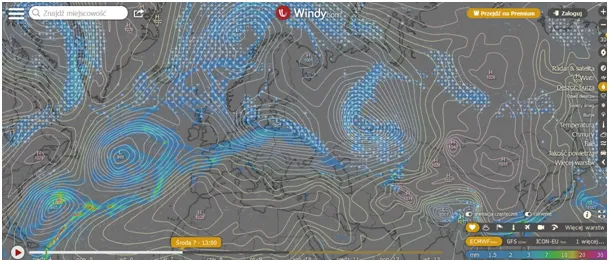
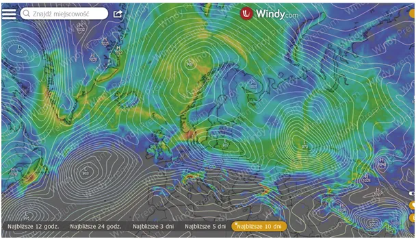
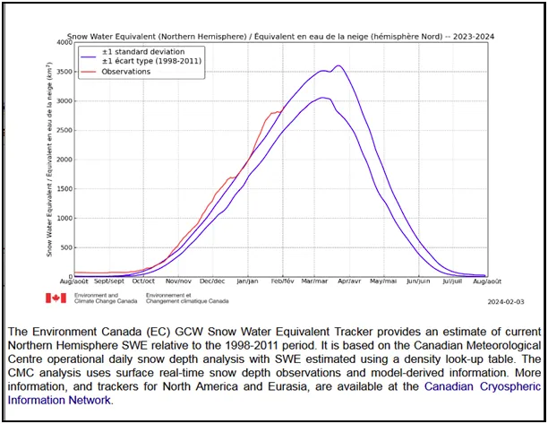
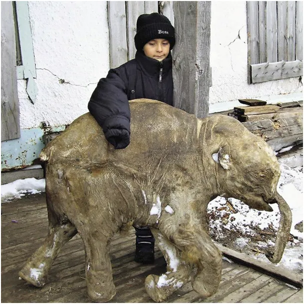

Kiedy jest sezon na mamuty?
Ciepły deszcz nadchodzący z zachodu za naszą wschodnią granicą napotyka arktyczne powietrze i zamienia się w opady śniegu. Na drugiej mapce prognozy nowego śniegu na najbliższe 10 dni. Na wykresie ilość wody uwięzionej w śniegu na północnej półkuli. Z poziomów rekordowych w styczniu wracamy do poziomów wysokich, ale to w sytuacji, gdy w środkowej Azji i środkowej Ameryce Północnej, po wielkich odwilżach mamy spore obszary bez śniegu, oznacza to, że jego grubość w Arktyce jest ponadprzeciętna.



Przypominam, że w poprzednim sezonie po raz pierwszy obserwowano śnieg przez całe lato arktyczne, który nie zdążył stopnieć i we wrześniu został przykryty nowymi opadami. Jest to namiastka procesu zlodowacenia północy, gdzie tereny wiecznego śniegu i lodu przesuwają się na południe. Będziemy obserwować to fascynacje zjawisko, a nuż odkryjemy gdzieś zabłąkanego mamuta?

Zdjęcie przedstawia zmarzlinę małego mamuta a stan jego świadczy o tym, że niedługi chłód, czy cykl ostra zima/lato, w których to szczątki uległyby rozkładowi, a gwałtowny silny mróz, który już nigdy nie puścił zabijał te zwierzęta. Tak gwałtowna zmiana klimatu to zwykle skutek kataklizmów, takich jak erupcje wulkanów, czy katastrofy kosmiczne, które poza "atomową zimą" mogą spowodować zmiany prądów oceanicznych. Gwałtowne ochłodzenie, na tamtych terenach miało miejsce 10 tyś. lat temu i trwa do dziś. Z wiecznej zmarzliny ciągle wyciągane są zamrożone mamuty z całymi tkankami. Znane są historie żywienia się takimi leśnymi mrożonkami .
Wiara "carbo-frustratów", że mogą zapanować nad klimatem ziemi jest w obliczu takich przemian naiwna. Ich postawa, jak wszelkie nielogiczne hipotezy jest sprzeczna wewnętrznie. Z jednej strony wierzą, ze człowiek może okiełznać planetę, z drugiej wierzą, że to planeta jest ważniejsza niż ludzie. Jest to czyste barbarzyństwo, nasza cywilizacja i inne sąsiednie wielkie cywilizacje oparte są o ten sam pogląd na rolę człowieka w świecie zapisany w Księdze Rodzaju:
" Stworzył więc Bóg człowieka na swój obraz, na obraz Boży go stworzył:
stworzył mężczyznę i niewiastę. Po czym Bóg im błogosławił, mówiąc do nich: «Bądźcie płodni i rozmnażajcie się, abyście zaludnili ziemię i uczynili ją sobie poddaną; abyście panowali nad ptactwem podniebnym, nad rybami morskimi i nad wszystkimi zwierzętami pełzającymi po ziemi». I rzekł Bóg: «Oto wam daję wszelką roślinę przynoszącą ziarno po całej ziemi i wszelkie drzewo, którego owoc ma w sobie nasienie: dla was będą one pokarmem. A dla wszelkiego zwierzęcia polnego i dla wszelkiego ptactwa podniebnego, i dla wszystkiego, co się porusza po ziemi i ma w sobie pierwiastek życia, będzie pokarmem wszelka trawa zielona».
Amen
Paweł Klimczewski